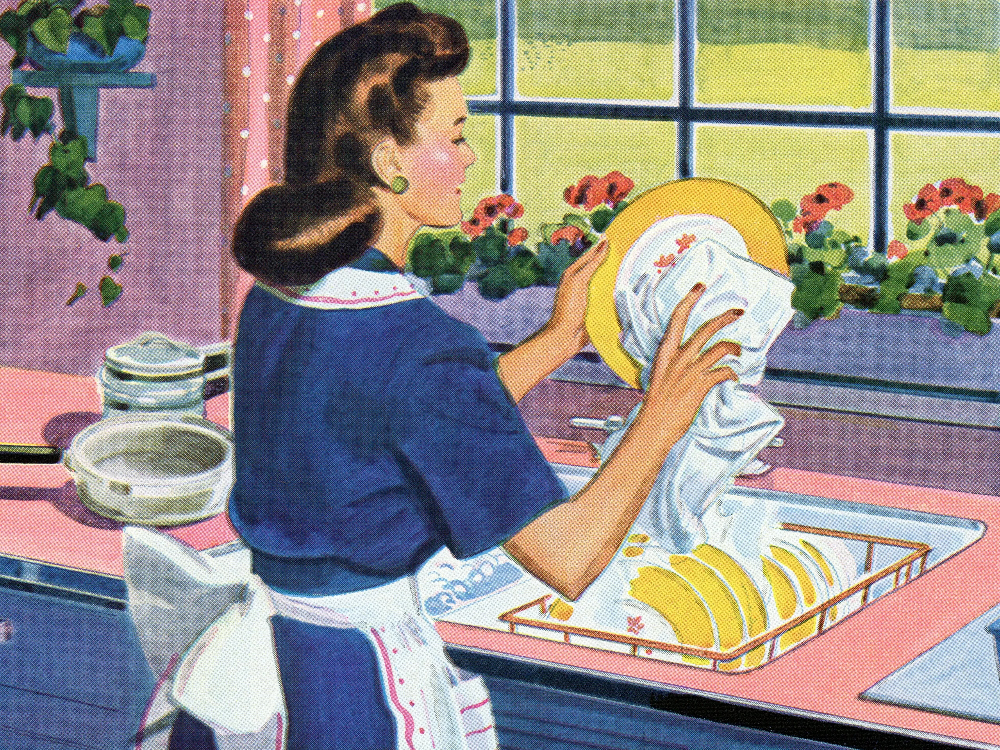

Gender and AI
Gender and Race bias are always a coexisting and closely associated issue. When raising the problem of ethnic biases, oftentimes it is related to the low social status of women and the privileges of men at a higher class. Although gender inequalities have always been an ongoing controversial topic of society, in recent years with the development of AI and technology, it has also gradually become an issue of AI being biased and reinforcing sexism. This phenomenon raises concerns about the societal impact of AI as it becomes more integrated into everyday decision-making processes, from job applications to judicial systems, the risk of strengthening gender and racial inequalities becomes even more significant.
One notable instance highlighting this issue occurred a few years ago when an AI was asked to associate men and women with certain professions. A study of machine learning introduced a question: can machines be sexist? In the experiment, when the AI was inquired of “if man is a computer programmer, what is women?”, and shockingly the response was homemaker. This response reflected a stereotype that limits women to home chores while suggesting that more complex and difficult tasks are suited to men. Moreover, such responses not only reflect the gender biases embedded in the datasets but also highlights the broader societal issue where women are often sidelined in STEM fields and other areas perceived as complex or challenging.
Has it gone better since then? Yes, by recognizing the social impact of their technologies, developers have started to adjust AI systems to foster a more inclusive understanding of gender roles. Now if AI were posed to similar questions of what woman is as if man is a programmer, it will claim that women, like men, are qualified for diverse roles and excel in various fields, and any metaphor made should be understood as highly generalized and not reflective of the full capabilities of all individuals within a gender.
However, despite progress in textual responses, visual AI like DALL-E still have shown biases when generating images related to professions on gender issues. When it was asked to create images of engineers, scientists, and IT experts, a majority between 75 and 100 percent of the generated images was men, highlighting a bias still left in visual AI’s. AI’s are learning to generate inclusive contents, yet the problem doesn’t look like a one time thing. This ongoing challenge underscores that while efforts have been made towards creating more objective and unbiased AI systems, the problem is still not entirely resolved.